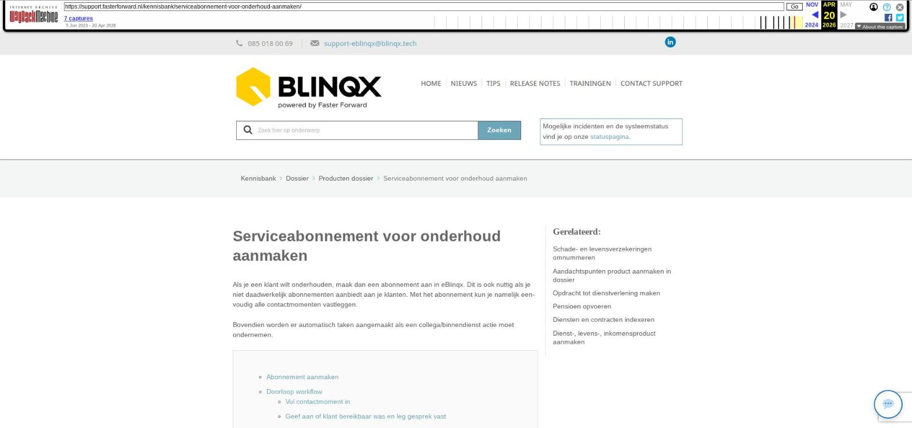

Aplaza koppeling aanvragen: Aplaza zonder ADN

Tekstinhoud
Title: Aplaza koppeling aanvragen: Aplaza zonder ADN | Support
URL: https://web.archive.org/web/20251216031816/https://support.fasterforward.nl/kennisbank/aplaza-inrichten-aplaza-zonder-adn/
Source element: <article>
---
Aplaza koppeling aanvragen: Aplaza zonder ADN
Het is mogelijk om Aplaza zonder ADN af te nemen.
Aanvragen bij Aplaza
TIME contract
Bedrijfscertificaat
Informeren verzekeraars
Aanvragen bij Aplaza
Ga je alleen gebruik maken van Aplaza, dan kan je dit op de website van Aplaza aanvragen. Bij het aanmelden bij Aplaza wordt er gevraagd om het kantoornummer bij eBlinqx. Dit is jouw dossiernummer in onze eBlinqx-omgeving en kan je bij ons opvragen.
Wanneer je bent aangemeld, krijg je het volgende doorgestuurd:
EMS Postbus
Wachtwoord voor de EMS Postbus
Deze gegevens stuur je naar ons door, zodat wij daar mee aan de slag kunnen.
TIME contract
Om Aplaza te gebruiken, heb je een TIME contract nodig. Als je alleen Aplaza gebruikt, dien je het 'TIME documenten pakket' af te nemen. Wanneer je Aplaza én ADN wilt gebruiken, dan neem je het 'Documenten en Berichten pakket' af. Het 'TIME documenten pakket' vraag je aan via onderstaande link.
TIME contract aanvragen bij Solera
Bedrijfscertificaat
Ook hebben wij een bedrijfscertificaat nodig. Deze kan je op de website van Solera aanvragen. Je krijgt dan een aantal gegevens doorgestuurd die je kan gebruiken om een bedrijfscertificaat op te halen via de ABC Tool van Solera.
In de totaliteit stuur je dan de volgende documenten als antwoord op uw e-mail van de consultant of opdrachten@fasterforward.nl
EMS Postbusnummer
Wachtwoord voor de EMS Postbus
Het bedrijfscertificaat (in .abc formaat)
Het wachtwoord wat correspondeert met het bedrijfscertificaat. Deze heb je gebruikt om het bedrijfscertificaat op te halen via de ABC Tool.
Informeren verzekeraars
Op het aanvraagformulier van Solera kan je aangeven dat zij de verzekeraars informeren. Dit zal door middel van een standaardbericht naar de verzekeraars plaatsvinden. Het is daarom ook beter, en Solera geeft dat ook in een e-mail aan, om zelf de verzekeraars te informeren dat je Aplaza berichten wilt ontvangen. Hiervoor geldt dat je het EMS postbusnummer door geeft aan de verzekeraar (via de afdeling die gaat over intermediaire zaken) en dat je graag Aplaza berichten wilt gaan ontvangen. Hier vind je welke verzekeraars met Aplaza werken.
Let op dat je het bedrijfscertificaat ook kenbaar maakt bij a.s.r. Cockpit en Nationale-Nederlanden (adviseur.nn.nl). Hier vind je meer informatie.
Laatste update: 9 december 2025
Was deze informatie nuttig?
Ja Nee